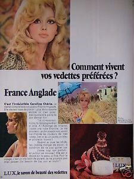
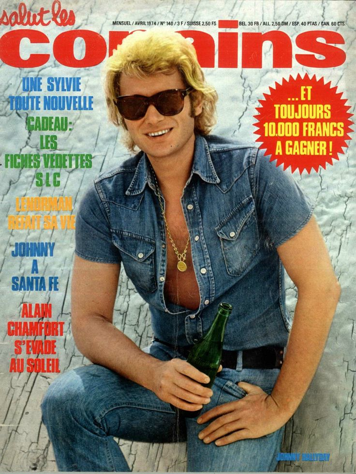
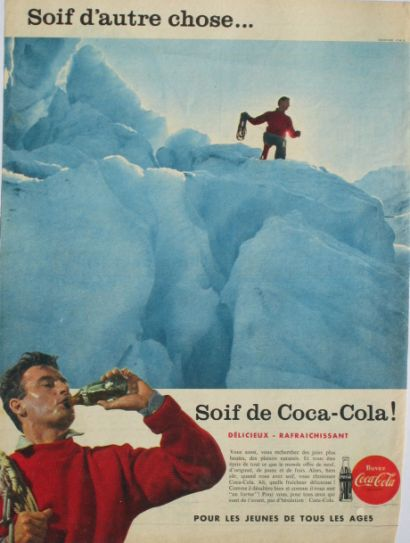

La publicité continue de promouvoir le schéma de la famille traditionnelle. Néanmoins, la famille subit des mutations. La France est économiquement reconstruite, la Ve République est consolidée et la paix règne depuis la fin de la guerre d’Algérie (1962). Démographiquement, le taux de natalité est en baisse depuis 1965 : il se stabilise autour de 16,5%° et tombe à 15,5%° en 1975. Les mariages subissent aussi une légère baisse : 410 000 en 1972 contre 387 000 en 1975. Il apparaît un phénomène de restriction volontaire des naissances de la part des baby-boomers, arrivés à l’âge adulte. Le modèle de la famille traditionnelle semble se recomposer. Mais pour quelles raisons ?
Une famille aimante
La publicité montre toujours une famille composée d’une mère, d’un père et d’un enfant. Ce schéma reste majoritaire. Dans l’ensemble, la consommation diffère peu de celle des années 1950. L’accès aux appareils électroménagers, à l’automobile, à la télévision se démocratise. On parle « d’uniformisation culturelle des comportements » dû à la volonté d’un égalitarisme entre les classes sociales, de la généralisation du salariat et de la tertiarisation de la population active. En parallèle, certains biens de consommation (comme l’électroménager) connaissent alors une saturation au début des années 1970. L’hédonisme et l’individualisme commencent à remplacer l’éthique du travail, le rigorisme, la discipline d’avant-guerre, suscitant de nouvelles pratiques de consommation. Les familles se tournent vers des dépenses d’habitation, d’hygiène et de santé, de transports, de culture et de loisirs. Si la consommation des familles reste pratiquement similaire aux précédentes, la famille semble se rétrécir : à la politique nataliste prônée après la guerre, les familles n’étaient déjà plus convaincues des aides sociales apportées par l’Etat pour subvenir à leur consommation. Par le droit à la contraception et le droit à l’avortement, les enfants semblent plus désirés et les relations parents-enfants sont moins strictes et plus aimantes. Dans cette publicité, les parents s’intéressent à leur enfant, il est au cœur de l’attention. En général, les parents donnent beaucoup plus à leurs enfants (par exemple on donne à l'enfant un reste de nourriture qui autrefois serait allé au père de famille). Les enfants deviennent des consommateurs et des moyens de consommation (de nombreuses publicités montrent des images d'enfants). Les enfants ont de plus en plus d'impact sur les achats de leurs parents et le choix des jouets que ceux-ci leur offrent.
Le style parental change : les parents sont de moins en moins autoritaires envers leurs enfants, usant de styles plus démocratiques envers eux que les générations précédentes.
Cependant, le schéma de la famille se recompose. Les baby-boomers d’après-guerre ont rajeuni la population et ont fait émerger une nouvelle catégorie sociale : les jeunes.
Les jeunes
La génération du baby-boom est entrée de plain-pied dans l’ère de la consommation. L’existence d’une culture « jeune » suppose donc le partage d’un système de valeurs, de goûts et de pratiques propres aux jeunes. L’école, qui se massifie, et la mixité sociale qu’elle entraîne expliquent cette tendance marquée chez les plus jeunes. Ils possèdent leur propre culture : les « yéyé », ou encore les hippies dans les années 1970 possèdent leurs propres codes vestimentaires et culturels. Ils adoptent un style de vie spécifique avec sa mode vestimentaire comme le blue-jean et ses consommations et ses pratiques culturelles.
Cette publicité rassemble à elle seule l’évolution de la jeunesse dans la société française : les jeunes, le code vestimentaire et la libération du corps des femmes. Les jeunes filles portent des pantalons, des vêtements unisexes qui s’étaient déjà développé dans les années 60’. En sortant du magasin, celles-ci portent des vêtements plus courts (minijupe). Même si le ton est assez misogyne, elle témoigne de la libéralisation des codes vestimentaires, également pour les femmes.
Le tourne-disque, puis le magnétophone deviennent des objets personnels. En 1961, 40 % des jeunes possèdent leur radio et 46 % en 1966.
RADIOLA, le mini K7 MUSICASSETTE (1967)
Les mass médias proposent des émissions de radio, de télévision et une presse spécifique à la jeunesse, qui y trouve des alternatives à l’espace de la famille et de l’école. En ce qui concerne la presse, le phénomène est massif. C’est le pouvoir d’achat accru des 15-20 ans, leur potentiel de consommation et la constitution du groupe jeune en tant que nouveau groupe social qui ont permis la naissance de cette forme de presse spécifique, principalement centrée sur les modes musicales, les stars de la chanson. La star devient « objet de publicité » : elle patronne parfums, savons, cigarettes, etc.

Levi's, 1970


Coca Cola, 1958
Les idoles seront présentées dans des activités à la mode, comme le ski nautique, qui incarne les plaisirs de la mer, la plage, le bronzage, la liberté des corps. Quant aux images de la jeunesse dans la publicité, elles renvoient fréquemment aux activités de loisirs sportifs, d’autant qu’il recoupe celui des vacances, à la montagne ou à la mer, et des gammes de produits qui en sont les supports et les représentations idéalisées.
En développant sa propre culture, les jeunes sont en décalage avec les générations précédentes mais aussi avec les institutions. Ce déséquilibre va être au cœur de la révolte en mai 68, où les jeunes revendiquent plus de droits, de libertés et paradoxalement, ils réclament la fin de la société de consommation. L’évolution des mœurs de la société française va peser sur le schéma familial, notamment sur la place des femmes.
Mai 68 constitue un mouvement culturel et social de type nouveau, en dehors des partis et syndicats traditionnels. D'une part, il conteste la société de consommation et l'idéologie productiviste qui l'inspire, plus soucieuse de la rentabilité financière que du bonheur des hommes ; il dénonce l'aliénation par les objets et la création permanente de besoins nouveaux. D'autre part, il exalte l'épanouissement de l'individu, son droit au bonheur, contre la rigidité des hiérarchies et des disciplines héritées. Ainsi est remis en cause le modèle autoritaire, le style de commandement hiérarchique, bureaucratique, qui prévaut dans la famille, à l'école, dans l'entreprise, dans l'État, dans les Églises, dans toutes les organisations et structures sociales. Dans la primauté donnée à l'individualité, à la subjectivité de chacun, se trouve l'élément commun qui relie tous les aspects de Mai 68.
De « Mère » à « Femme »
L’émancipation de la femme grâce aux courants féministes modifie le schéma de la famille. En 1970, elles rompent complètement avec le discours Moulinex libère la femme : elle analyse le travail domestique comme une véritable forme de servage. L’idéal de la « fée du logis » commence à être rejeté au profit d’une femme active et indépendante. Le travail des femmes connaît un décollage à partir de 1962. Il passe brusquement de 36% en 1962 à 39% en 1975 à cause de l’arrivée sur le marché du travail de la génération du baby-boom et la tertiarisation de la population active. La population active féminine a augmenté de 4 millions. Le travail des femmes est de plus en plus visible et bouleverse certains types de métiers : la part des femmes dans le monde ouvrier s’accroît considérablement à la fois dans les vieux métiers peu qualifiés (textile, habillement) et dans les secteurs nouveaux comme l’électronique. Elles sont fortement présentes dans le tertiaire : les secrétaires augmentent toujours mais aussi dans le professorat ou encore, la distribution du courrier. Elles ont aussi accédé à des professions qui leur étaient soit interdites (la police, l’armée et la gendarmerie) soit restreintes dans les faits (justice, la médecine, l’université). Néanmoins, le travail des femmes est toujours majoritairement à temps partiel et subsiste des inégalités fortes (comme l’inégalité de salaire ou le travail domestique). Le sociologue François Dubet nomme ce changement une « émancipation ségrégative ». L’allongement de la scolarité et l’entrée massive des femmes sur le marché du travail salarié changent la donne : la naissance des enfants n’implique plus l’abandon de l’emploi.
1944 : Droit de vote aux femmes
1965 : Les femmes peuvent travailler sans l’accord de leurs maris et d’avoir un compte à leur nom
1969 : Fondation du Mouvement de Libération des Femmes (MLF)
1971 : Manifestation contre la Fête des Mères (appel du MLF à manifester contre la fête des mères)
1971 : Manifeste des 343 (réclame le droit d’accéder librement à la contraception et la légalisation de l’avortement)
1975 : Loi Veil autorisant l’avortement en France.
La publicité montre de plus en plus le travail des femmes dans la publicité. En l’occurrence ici, elle place la femme comme « patronne » de l’entreprise (même si encore une fois, on relève un ton moqueur
L’entrée massive dans le marché de l’emploi mais aussi la modification du Code civil et du droit entre 1965 et 1975 a transformé le cadre familial : la fin de l’autorité du chef de famille sur son épouse et ses enfants, le changement des modalités du divorce, la diffusion de la contraception et le droit à l’avortement. Cela se traduit dans la publicité à ne plus assigner les femmes en tant que mère ou ménagère, mais comme une catégorie sociale indépendante, être femme. Elles deviennent autonomes professionnellement.
Dans cette publicité, la femme est représentée de différentes manières : élégante, dans la vie quotidienne, au travail. La publicité est centrée sur elle et non sous la tutelle d’un homme.
Les femmes revendiquent le droit de disposer librement de son corps et trouvent enfin une libération sexuelle. La mode des seins nus commence dans les années 60.
Les sous-vêtements (comme ici le collant) sont de plus en plus simples, la minijupe et les jeans moulants sont le symbole de cette libération sexuelle. Elle n'est plus consommatrice uniquement pour son mari et ses enfants mais consommatrice pour elle-même puisque son autonomie professionnelle le lui permet.